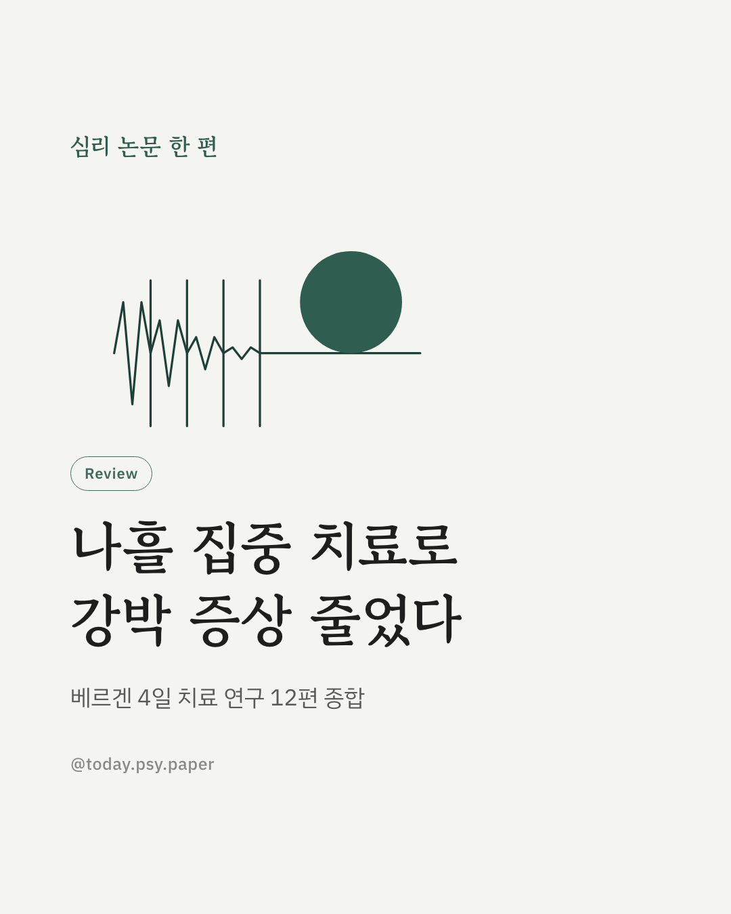
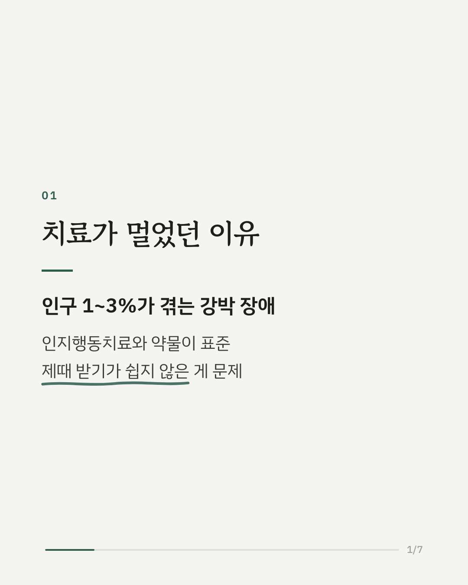
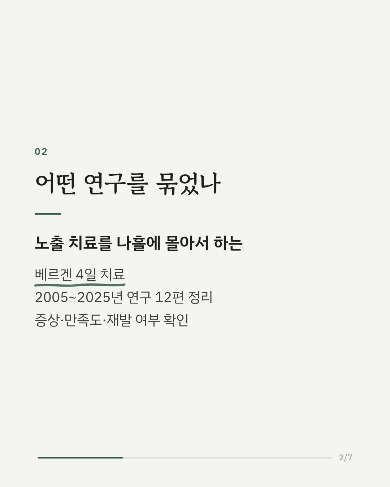
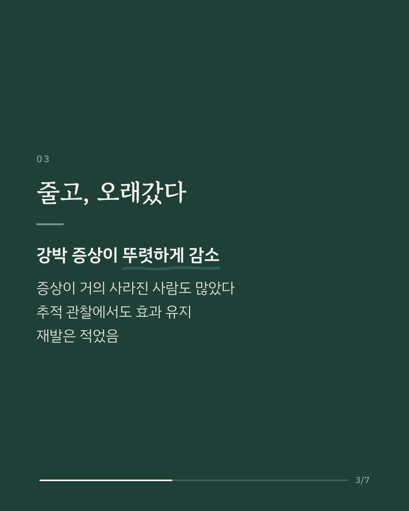
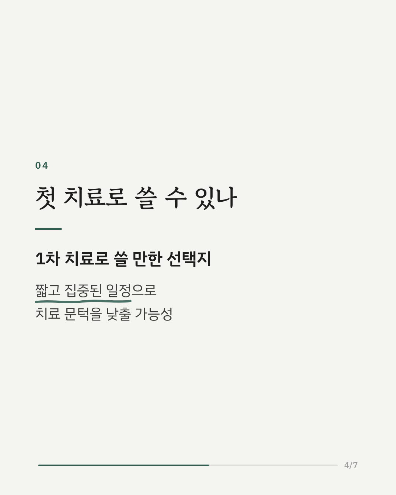
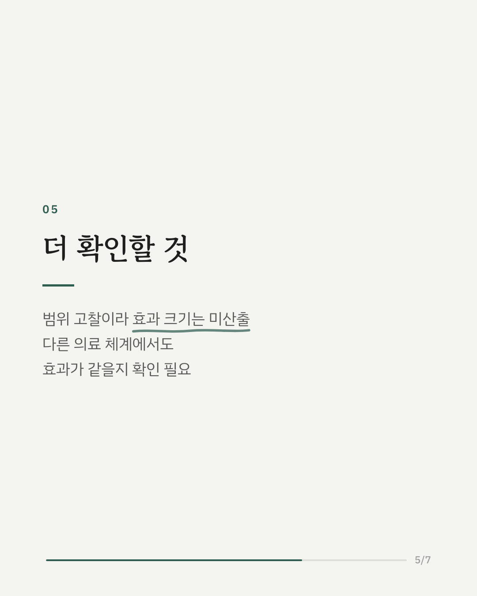
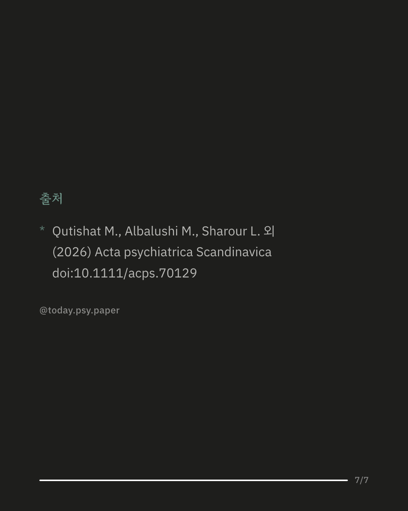

강박 장애는 인구의 1~3%가 겪는 흔한 정신질환입니다. 인지행동치료와 약물치료가 표준이지만, 몇 달씩 이어지는 치료를 제때 받기가 쉽지 않습니다. 노르웨이에서 개발된 '베르겐 4일 치료'는 노출 치료를 나흘 동안 집중적으로 진행하는 방식입니다. 연구진은 2005년부터 2025년까지 이 치료를 다룬 연구 12편을 범위 고찰(스코핑 리뷰)로 정리했습니다. 여러 연구에서 강박 증상이 뚜렷하게 줄었고, 증상이 거의 사라진 사람의 비율도 높았습니다. 장기 추적 관찰에서도 효과가 유지되었고 재발은 적었으며, 환자 만족도도 높았습니다. 연구진은 이 치료가 강박 장애의 1차 치료로 쓸 만한 선택지라고 봅니다. 다만 범위 고찰이라 효과 크기를 숫자로 종합하지는 않았고, 다른 나라의 의료 체계에서도 같은 효과를 낼지는 더 확인해야 합니다. Acta Psychiatrica Scandinavica (2026), 'The Bergen 4-Day OCD Treatment: A Comprehensive Scoping Review of Evidence and Implementation' DOI: 10.1111/acps.70129 #강박장애 #강박증 #노출치료 #인지행동치료 #임상심리 #정신건강정보 #심리학연구 #논문리뷰
python3 publish.py 42495803